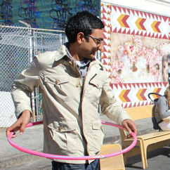

Share your learning experiences with the people who care.
The best way to increase a students performance
is to inspire and motivate them to do a little bit extra.
With Portfoliyo
children, parents, and teachers
can share notes, pictures, and videos
of a child's accomplishments
with a private network of supporters,
creating the environment for success.
Meet the team:
Peter Kuperman
Peter has a background in money management
and loves to inspire the people around him to greater heights.
He goes by the title "Chef by Night",
which probably means he can cook.
Harsh Patel

Harsh is a teacher who loves inspiring kids to be
creative, confident, and productive.
His fridge is always stocked with hummus
and he will drop anything for a good game of frisbee.
Eric Meyer
Eric
is a multimedia artist,
cousin, and uncle,
with a special focus in
co-creating silly stories,
and re-enacting video games in the park.
Jonny Gerig Meyer
Jonny
is a web developer
and occasional college philosophy professor.
He likes his frisbees thrown deep,
his students smart-alecky,
and his nephew chasing him around the house.